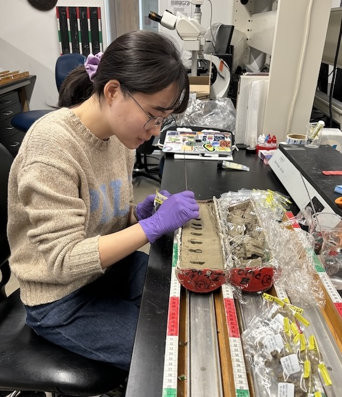

Hello! I'm Heeyeon Sun, a PhD candidate studying paleoclimate and organic geochemistry at UMass-Amherst. With over 8 years of research and lab experience, I thrive at the intersection of paleoclimate, biogeochemistry, and stable isotope geochemistry. I'm particularly interested in reconstructing climate history in a lacustrine environment based on multi-proxy organic geochemical approach.
🎓 Current Position: PhD Candidate in Geosciences at UMass Amherst
🧪 Research Interests: Paleoclimate, Organic Geochemistry, Limnogeology, Paleoceanography, Stable isotope geochemistry